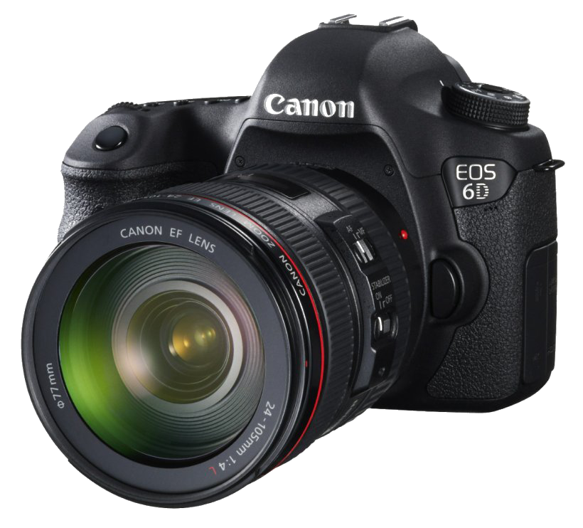
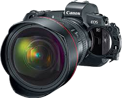
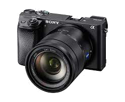

Camera is one of my favourite things, since I like to photo and video many things, esplecially for a travell footage.
Until now, I have 3 camera with 2 different brands. Two of them are Canon and one of them is Sony.
Canon 6D was my first camera that actually was my father camera. However, my father rarely ever use the camera, so I claimed it.
Knowing that I become love doing such photography and videgraphy, my father buy another two camera, which are Sony a6300 and Canon EOS R.
List of my Camera:
|  |  |  |
|---|
If any people ask me, which camera is better between Sony or Canon? I actually can not answer that, because both brands have different spesifications. Personally, Canon is better in taking pictures while Sony is better in taking videos. I think every people have their own preferences, so i can not really guarantee my words. Here is some video to explain the different of both cameras further.
Contact me: 3375450@student.uts.edu.au